106
Dias
Dias
Horas
Minutos
Segundos
O Dia do Preservativo, é uma iniciativa global da AHF realizada anualmente em vários países, com o objetivo de promover o acesso ao preservativo e reforçar a sua importância como prática essencial de saúde pública.
Distribuição de 5 mil preservativos gratuitos, acompanhados de informação educativa;
Palestra de sensibilização para reforçar as práticas que garantam sexo mais seguro.
Interação com as drag queens e distribuição de preservativos;
Momentos informativos sobre sexo mais seguro e redução de riscos.
Loja de Cidadão do Seixal (9h - 15h), com o apoio do Seixal Saudável;
Estação de Sete Rios, Lisboa (9h30 - 16h), com o apoio do Lisboa Sem Sida.
 

Somos uma organização que promove os direitos dos cidadãos, a sua participação, não-discriminação e defende o acesso equitativo a serviços de saúde, como serviços de prevenção tratamento e rastreio de doenças (IST'S, hepatites virais e tuberculose). Oferecemos apoio a grupos socialmente discriminados: comunidade LGBTQIAPN+, comunidade migrante de Países Africanos de Língua Portuguesa (PALOP), pessoas em situação de sem-abrigo, toxicodependentes e trabalhadoras do sexo.